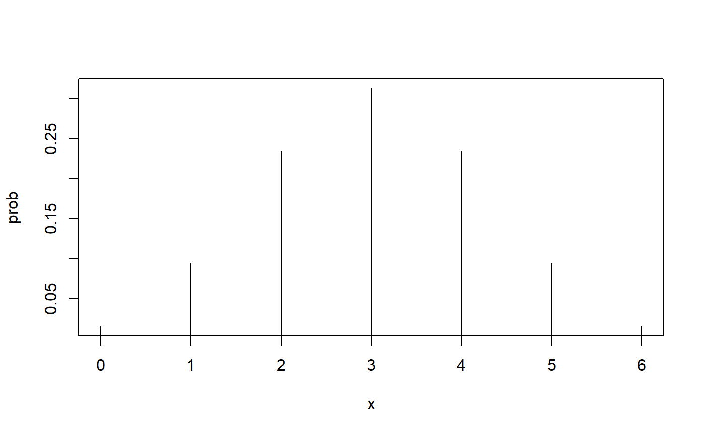
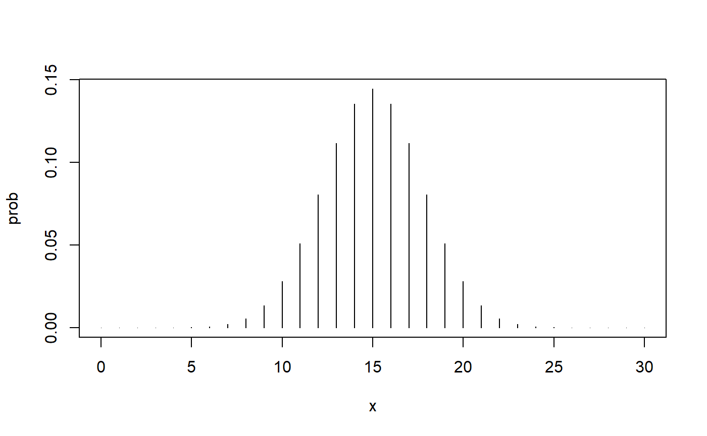

signtest.RmdThe sign test is a special case of the binomial test. In this vignette you will learn why it is an important special case. You will also learn about various situations in which this simple test can provide an opportunity for inference.
The only package needed for this vignette is the nplearn package.
library(nplearn)We now consider a research design in which units are paired on the basis of one or more extraneous variables so that when a response is measured for every unit in the study, the measures obtained from one member of each pair are correlated with those obtained from the other member of each pair. Units can be paired naturally or via an experimental process. Examples of natural pairing include twins, siblings, bushels of fruit collected from the same tree, weather metrics recorded on the same day, and puppies from the same litter. Pairing via an experimental process requires observation of an extraneous variable known to be related to the response variable of interest. In this case, the stronger the relationship of the extraneous and response variable, the stronger the pair and, consequently, the more power the study will have for detecting treatment effects. One example is the pairing of students on the basis of achievement test results when the study will involve a method designed to increase achievement. Another example is pairing patients on a measure of disease progression when the study will be about a treatment designed to eradicate the disease or alleviate the symptoms.
The value of the matched pairs design is that it can substantially reduce the variation in a response measure that is due to one or more extraneous variables. This reduction of noise (i.e., variation in observations that is not due to the independent, or explanatory, variable) can make it substantially easier to detect the signal (i.e., the effect of an indpendent or explanatory variable). A practical implication is that the design is more efficient. That is, fewer units will be needed to detect the treatment effect than would be needed using two independent samples to attempt to detect the same size effect. The obvious disadvantage of the design is that it requires either finding naturally matched units or creating such matches. To create a match will necessitate the use of an existing measure of an extraneous variable or making new measurements prior to the implementation of the matched pairs design.
In an observational study of natural pairs, the members of each pair are in different categories of the explanatory variable. For example, a 1966 study of 27 pairs of monozygotic twins looked at differences in scores on a test of intelligence for each twin pair. These pairs were chosen because the twins had been separated at birth, with one of the twins raised by the biological parents and the other raised in a foster home. In this case, the explanatory variable is the type of home in which the twin was raised, so it was necessary to select twin pairs that reflected this difference.
A more common approach is to experimentally create the explanatory variable, making certain that one member of each pair is placed in one category of the variable, such as a control condition, traditional intervention, or placebo condition, and the other member of each pair is placed in the other cateogry, such as a treatment condition. As I will discuss in more detail later, the conclusions of such a study are strengthened if the choice of which pair member is in which condition is based on random assignment.
Consider a study of two fertilizer options for fruit trees. Suppose that two trees were planted on each of six plots of land. Plots might be defined not only in terms of location, but soil characteristics (e.g., pH and granular form), sun exposure, wind exposure, and so forth. Thus, the two trees on each plot can be considered a pair due to their similarity on a variety of extraneous variables that are related to the variable of interest: fruit production. Further suppose that each tree received a treatment of fertilizer at regular intervals, but the trees in each pair received different types of fertilizer. (Although the trees are paired by their planting on the same plot, they would need to be planted far enough apart to avoid any crossover effect from the fertilizers.) To strengthen the validity of conclusions about the different fertilizers, the researcher randomly selected the member of each pair that would receive Fertilizer A, then applied Fertilizer B to the other member of the pair.
At some point, ripe fruit was picked off of all trees. Shown below are the results of this hypothetical study when entered into R. The observations are the number of pieces of ripe fruit.
fruit <- data.frame(A = c(82, 91, 74, 90, 66, 81),
B = c(85, 89, 81, 96, 65, 93))
cbind(fruit$A, fruit$B)
#> [,1] [,2]
#> [1,] 82 85
#> [2,] 91 89
#> [3,] 74 81
#> [4,] 90 96
#> [5,] 66 65
#> [6,] 81 93The relative effectiveness of fertilizers can be measured by looking at the difference in fruit production within each tree pair. We will subtract the fruit quantity produced with the help of one type of fertilizer from the quantity produced with the help of the other type. It does not matter which way we subtract, but it does matter that we keep track of which way we subtract so as to make legitimate statements about fertilizer effectiveness.
Notice that for each pair of trees we can derive two pieces of information: which fertilizer produced the highest yield and how much difference there is in yield. The first piece of information is provided by the sign of the number and the second by the quantity of the number. The sign test focuses, as you might guess, on the sign of the number. That is, the focus is on which fertilizer produced the highest yield in each tree pair. Given that our order of subtraction is A minus B, a positive number suggests a win for A.
There are two plus signs and four minus signs in these data. The trees with Fertilizer B outperformed the trees with Fertilizer A most of the time (a two to one win). Given that one tree was likely to outperform the other, can we attribute this outcome to the superior performance of Fertilizer B? Perhaps, yet it is possible that there are other extraneous variables at work. Maybe the seeds themselves made the difference. Maybe more trees with Fertilizer B received more water than trees with Fertilizer A. There are likely many extraneous variables that we have not even considered. This is why it was so important to randomly assign Fertilizers to one member of each tree pair. If that was done in this study, and if the type of fertilizer is really not responsible for the difference in yield, then the numbers of positive and negative signs in our data are simply the result of chance. Under the hypothesis of no difference in fertilizer effectiveness, the number of A trees that outperformed B trees (and vice versa) is simply due to chance assignment.
If chance assignment is the reason for differences in the numbers of signs, we can calculate the probability that Fertilizer A trees will result in just two positive signs. This is a binomial problem with six Bernoulli events and the probability of a Fertilizer A tree receiving a positive sign is 0.5. This is the same as the probability of obtaining “heads up” with the flip of a fair coin, and indeed that may be exactly how the researcher decided which tree would receive which fertilizer!
Here are the parameters of the binomial distribution.
\(n = 6\) \(\pi = 0.5\)
Here’s the picture of the probability distribution.
binom_plot(6, 0.5)
With a little thought, you may recognize that the picture we are looking at here is under some sort of null hypothesis stating that neither fertilizer is more effective than the other. The picture shows the probability of every possible number of positive signs for our difference scores when the sign of the difference is due to chance assignment of fertilizers to trees, but nothing else. It is basically the same distribution we would get if we didn’t use fertilizer at all! In this case, a positive sign would be due to other non-fertilizer-related characteristics of the trees and placement of the trees. We could right a null hypothesis that looks something like this.
\(H_0: Fertilizer doesn't make a difference\)
That’s a fine research null hypothesis, but how can we make it a statistical null hypothesis? The key is to think again about our difference scores. Is there any value of any statistic (and associated parameter) that will reflect an equal number of positive and negative difference scores? You probably have guessed that the answer is “yes.” Consider this null hypothesis.
\(H_0: \theta = 0\)
We use \(\theta\) to represent the population median. If the chance of a difference score being positive is the same as the chance of a difference score being negative (that is, the probability of each if 50%), then the median of the difference scores is 0. For our fertilizer research, we can write the null and alternative hypotheses like this.
\(H_0: \theta = 0\) \(H_1: \theta \ne 0\)
I am using a two-sided alternative here because we went into this study with no information that one fertilizer should be better than the other. The situation would have been different if, for example, we were told that Fertilizer B was developed based on new understanding of the properties of fertilizers so that the research is to confirm that Fertilizer B results in higher production than Fertilizer A.
Let’s set \(\alpha\), our maximum allowable Type I error rate, at 10%. Under the null hypothesis, here is the probability of obtaining only two plus signs for Fertilizer A.
pbinom(2, 6, 0.5)
#> [1] 0.34375For a two-sided test, we need to also include upper tail values that are equally incompatible with the null hypothesis. That is, we need to include the probability of four or more plus signs among our difference scores. (Notice that four plus signs would be the same as two negative signs for Fertilizer B.)
A p value of 0.6875 will certainly not persuade us to view this as an unlikely outcome if the null hypothesis is true, so we must retain a median of 0 as a reasonable possibility for the value of the parameter. Yet we remember that the number of trees with Fertilizer B that outperformed their matched pair tree (not to be confused with a pear tree, which is reserved for partridges) was four out of the six, or 0.67. What gives?
We didn’t have much power for this test because we only used six matched pairs. Let’s see what would happen if we kept the 2 to 1 ratio the same, but used 30 matched pairs. (This would require us to plant 60 trees.) Here’s the picture under the null hypothesis.
binom_plot(30, .5)
The 2 to 1 ratio would mean that we have 10 plus signs for Fertilizer A and 20 negative signs. Here’s the p value for the two-sided test.
This is better! We have some convincing evidence that Fertilizer B outperforms Fertilizer A. Unlike with some hypotheses you may test with the binomial test, the sign test is always based on a null hypothesis of equal probability (0.5) of plus and minus signs, so the binomial distribution when the null hypothesis is true is symmetrical. Thus, for two-tailed tests it will work to double the probability in one tail when you are calculating the p value.
Suppose in our fruit tree study that we have reason to believe that the median of difference scores is 1. (I have no idea why we might have a reason to believe this, but stick with me. I’ll put this irrational suspicion to rational use in a moment.) In practical terms, this would mean that the median increase in fruit production is one piece of fruit if Fertilizer B is used instead of Fertilizer A. Similarly, we could propose a median of -1, which would again mean an increase in fruit production, but this time if Fertilizer A is used instead of Fertilizer B.
By definition, the median has 50% of scores above it and 50% of scores beneath it. Therefore, we can test the hypothesis that the median is 1 using the sign test, because the sign test uses a null hypothesis that 50% of the signs are plus signs and 50% of the signs are minus signs. The only difference between this hypothesis test and the hypothesis of no difference in fruit production is that in the earlier hypothesis test, no difference in fruit production corresponded to a median of 0. Thus, we were able to look at the actual sign of each difference. For testing that the median is 1, we need to count any value above 1 as a “plus sign” and any value below 1 as a “minus sign”. This is a bit bizarre, because now we will think of 0 as having a minus sign.
Here are the differences we calculated earlier.
If the median value in the population is 1, then we have 1 value above this median and 4 values below this median. We also have a single value that falls right on the median. How are we going to handle this? One possibility is to just use the 5 values that are either above or below the median, and indeed that is what some statisticians recommend for this situation. This approach is a bit peculiar, because it means that you are throwing out the one data point that is totally consistent with the null hypothesis that the median is 1. Talk about stacking the deck in favor of the alternative hypothesis!
Let’s calculate the p value two ways. First, we’ll calculate it as if the value of 1 is above the median. Next, we’ll calculate it as if the value of 1 is below the median. Here’s the first way. Remember that we now have two plus signs (“above” 1) and four negative signs (below 1).
That should look familiar. It is the same p value we obtained when testing if the median is equal to 0. That’s no surprise because by counting 1 as “above” the median (even though it is right on the median), we are ending up with the same number of plus and minus signs as before. What happens if we count the 1 as being “below” the median?
That dramatically changed the picture! Neither of these p values will lead us to reject the null hypothesis of a population median of 1, based on our established tolerance for error of 10%, but this second p value gets us much closer to our rejection line. Which of these should we use? Given our distaste for Type I errors and knowing that the value in question is as strongly in support of the null hypothesis as possible (the value is 1 and our hypothesized median is also 1), I recommend that we take the first p value to take us further away from rejecting the null hypothesis and more likely to retain it.
If you remember the rule about confidence interval construction, you have probably guessed where this is all going. Let’s review the steps, adding this new rule that we just discussed.
Determine our confidence level. This will correspond to our tolerance for errors in that our confidence level will be \((1 - \alpha)*100\%\), where \(\alpha\) is the maximum Type I error rate that we can tolerate.
Hypothesize a median, \(\theta\).
Count how many of the matched pair differences are below the median (call these minus signs) and how many of these differences are above the median (call these plus signs). For a difference that is equal to the hypothesized median, call it either a minus sign or a plus sign, depending on which will make it more difficult to reject the null hypothesis.
Reject hypotheses in which \(p \le \alpha\). Otherwise, retain the hypothesis.
Test all possible hypotheses. Symbolically, we can state it like this.
\(H_0: \theta = \theta_0\) \(H_1: \theta \ne \theta_0\)
\(-\infty < \theta_0 < +\infty\)
If we are interested in whether a median is only above or only below 0 (as we would have been if Fertilizer B was developed to be an improvement on Fertilizer A), then we would test one-sided hypotheses. Aside from this, the construction of a lower-bounded or upper-bounded interval is the same.
In practice, we will not test every possible \(theta_0\) because we have other more interesting activities to pursue in life. Instead, we will search for the boundary between rejection and retention. For the above data, let’s test a median of 10. That gives us 1 plus sign and 5 minus signs.
Let’s try these hypotheses.
\(H_0: \theta = 3\) \(H_1: \theta \ne 3\)
We now have 0 plus signs and 6 negative signs.
We finally have a rejected null hypothesis. We will obtain similar results if we use these hypotheses.
$H_0: = \(-13\) $H_1: \(-13\)
Now we have 6 plus signs and 0 negative signs.
You probably noticed that this is the same calculation as the previous one, but with the addends swapped. We have determined that every hypothesized value that yields between 1 and 5 plus (or minus) signs will result in retention. Thus, we are able to define our 90% confidence interval.
\(-13 < \theta < 3\)
There are a few elements of this interval construction that are noteworthy. First, we would have obtained the same rejection results if we had hypothesized -14 instead of -13 and 4 instead of 3. Yet we desire the narrowest interval we can obtain, so because -13 and 3 are also rejected, those are the values we will use for our endpoints.
The other comment is a bit more disconcerting. Our testing has wandered outside of the range of our data in order to obtain a 90% confidence interval. That feels a bit like extrapolating beyond the data, so I’m not totally comfortable. That said, it is the best we can do with such a small sample size.
Previously, I provided an example of hypothesis testing with a larger sample size, so it seems in order to do the same for a confidence interval example. The difference here is that we need differences. (Pun only partially intended.) If we want to construct a confidence interval for the median, we need to know more than how many times Fertilizer B beat Fertilizer A. We need to know the extent of this beating by comparing fruit yields.
Here is a (hypothetical) construction of yield differences where again I subtracted the yield for B from the yield of the matched pair tree.
A.minus.B <- c(-1, 0, -1, 0, 4, 5, 25, 15, 5, 125, 61, 2, 7, -2, 2, 1, 7, 12,
23, 1, 86, 17, 6, 12, -1, 1, -1, -2, 58, 3, 2, 18, 1, 40, -1,
2, 12, 0, 3, 6, -2, 1, 56, 5, -2, 8, -2, -1, 30, 1, 2, 52,
3, -1, 52, 7, 18, 9, 145, 17)
length(A.minus.B)
#> [1] 60Let’s determine how many plus signs are in these data.
sum(A.minus.B > 0)
#> [1] 45That means there must be 15 values that are either minus signs or 0. (I’m going to leave 0 in with the minus signs to reduce the chance of rejecting the null hypothesis.)
Here’s the p value.
I’m quite confident that the fertilizers are not equally effective!